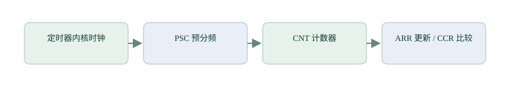

定时器：让硬件计数、定时和输出脉冲
已经知道时钟从哪里来，接下来让一个计数器按这个节奏前进。数够指定次数就通知程序，数到指定位置就改变引脚，也可以在外部边沿到来时记下当前计数。
主控用 TIM6 提供 HAL 毫秒计时。传感器水位通知与麦克风连续采集沿前文实现即可。本篇补充定时器在其他控制、测量项目中的常用方法，完成后可以继续系统保护拓展，或回到 裸机逻辑综合。
第 1 节 · 一个计数器，怎样得到指定时间？
定时器输入时钟每跳一拍，内部计数器就按配置增加。计数前先经过预分频，可以让它每隔几拍才增加一次。源码中常见的 PSC 是预分频寄存器，CNT 是当前计数，ARR 是计数终点对应的自动重装载值。
例如输入时钟为 160 MHz，PSC 写 159，表示每 160 拍产生一次计数，计数频率变为 1 MHz，每格 1 微秒。ARR 写 999，计数依次经过 0～999，共 1000 格，约每 1 毫秒产生一次更新事件，然后从零开始。

对于这里的向上计数例子，更新频率＝输入时钟÷(PSC＋1)÷(ARR＋1)。两个加一来自寄存器从零开始表示数量。其他计数方式要按对应规则计算；定时器输入时钟也要沿时钟树确定，不能默认等于 CPU 主频。
第 2 节 · 数够以后，怎样让程序知道？
打开更新中断，计数到终点时，处理器进入定时器中断，HAL 再调用 HAL_TIM_PeriodElapsedCallback()。回调参数告诉程序哪一个定时器产生事件；回调适合设置短小通知，后续主循环完成具体工作。
当前项目的 TIM6 先把计数节奏配置为每格 1 微秒，再数 1000 格，形成 1 毫秒更新。main.c 的周期回调识别 TIM6，调用 HAL_IncTick() 增加 HAL 毫秒计数；HAL_GetTick、延时与超时判断依靠它前进。
为什么中断里调用 HAL_Delay 可能一直出不来？
HAL_Delay 等待毫秒计数变化。如果当前中断的抢占优先级高于或等于 TIM6，TIM6 不能打断它；当前中断又在等 TIM6 更新计数，于是双方互相等，延时无法结束。当前工程的 TIM6 优先级数值为 15，许多外设中断数值更小，抢占级别更高。
若希望计时中断能打断当前中断，需要更高的抢占优先级，在 Cortex-M 上通常表现为更小的数值；只调整子优先级不能解决抢占问题。教学中优先把需要等待的工作交给主循环，回调设置标志后就返回。完整优先级规则可回看 中断章节。
第 3 节 · 同一个计数器，怎样让引脚按比例高低变化？
再增加一个比较值 CCR。对于向上计数、有效高电平的 PWM mode 1，可以理解为：计数小于比较值时输出高电平，到达比较值后输出低电平，下一轮又重复。这就是脉宽调制，缩写 PWM。
仍以一轮 1000 格为例，比较值为 250，高电平约占 250 格，低电平占其余 750 格，占空比约 25%。改变比较值能改变一轮内高电平的比例；改变分频或终点则会改变周期。
独立实验可在支持通道输出的定时器上配置，例如生成 TIM2 及其通道 1 的代码，选有对应复用功能的空闲实验引脚。包含 tim.h 后，htim2 是生成的管理对象；HAL_TIM_PWM_Start 启动通道，__HAL_TIM_SET_COMPARE 修改比较值：
if (HAL_TIM_PWM_Start(&htim2, TIM_CHANNEL_1) == HAL_OK) {
__HAL_TIM_SET_COMPARE(&htim2, TIM_CHANNEL_1, 250);
}这是独立通道实验；TIM6 是基本定时器，没有可供这段代码使用的输出通道。输出驱动能力要符合负载需要，电机等负载需配套驱动电路。用分析仪测周期和高电平宽度，才能确认实际配置。
第 4 节 · 反过来，能测量外面送来的周期吗？
可以。输入捕获在引脚指定边沿到来时，把当前计数值锁存到捕获寄存器。连续两次同类边沿之间的计数差，就是周期经过的格数。若每格 1 微秒，差值为 2000，周期就是 2 毫秒，频率约 500 Hz。
计数器可能在两次边沿之间回到零，必须处理回绕；长时间没有新边沿，还需要判断超时。滤波、边沿极性和计数器宽度也会影响结果。先用已知方波验证，再接真正被测信号。
到这里，定时器的几种用途就来自同一个计数过程：数到终点通知，比较时改变输出，外部边沿到来时记录位置。下一篇 系统保护 看程序不再正常前进时，怎样检测并恢复。
资料与源码
- ST AN4776 定时器应用与RM0456：计数、比较、输入捕获。
- TIM6 时基实现与 main.c 周期回调。